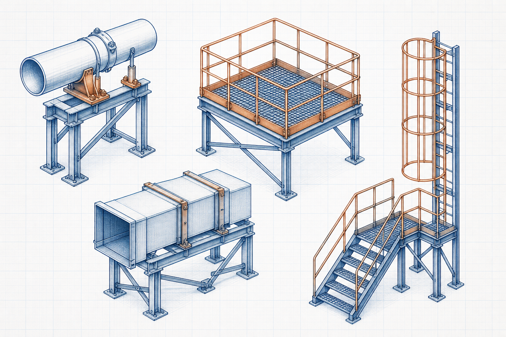

Support and access equipment guide
Industrial Ladder and Stair Components
Industrial Ladder and Stair Components is an industrial equipment topic within Access Equipment. It explains the equipment’s function, main interfaces and operating considerations when the required duty is to support equipment, piping or ductwork and provide safe industrial access.

- Content type
- Support and access equipment guide
- Level
- Industrial Equipment › Structural Steel, Supports and Access Equipment › Access Equipment › Ladders and Stairs › Industrial Ladder and Stair Components
- Audience
- Student · Design engineer · Project engineer · Plant engineer
- Last reviewed
- 30 August 2026
What Is Industrial Ladder and Stair Components?
Industrial Ladder and Stair Components is an industrial equipment topic within Access Equipment. It explains the equipment’s function, main interfaces and operating considerations when the required duty is to support equipment, piping or ductwork and provide safe industrial access.
In this hierarchy, it is treated as industrial support, restraint or access equipment. A practical review starts with the required duty and then checks the equipment’s flow path, interfaces and constraints.
Why Is It Important in Industrial Equipment?
Industrial Ladder and Stair Components should be considered as part of a complete access equipment arrangement, not as an isolated item. Its actual configuration depends on the process duty, material or fluid basis, interfaces, operating conditions and applicable project requirements.
Key Terms and Definitions
- Industrial Ladder and Stair Components
- The equipment subject defined by this page title.
- Ladders and Stairs
- The approved topic used to organise this guide.
- Access Equipment
- The equipment system that establishes the immediate operating context.
- Operating basis
- The declared duty, process conditions, material or fluid basis, interfaces and requirements used for review.
Fundamental Operating Principle
Industrial Ladder and Stair Components should be considered as part of a complete access equipment arrangement, not as an isolated item. Its actual configuration depends on the process duty, material or fluid basis, interfaces, operating conditions and applicable project requirements. The component and system arrangement must therefore be reviewed with the duty, control philosophy, safety functions and maintenance needs in view.
Rating Basis, Symbols and Units
Equipment rating
Use the documented rating method appropriate to the actual equipment and service.
Industrial Ladder and Stair Components does not have one universal equation. Use verified vendor, project or standards-based relationships that match the configuration and defined operating conditions.
Unit consistency
Use one declared unit system. State the basis for capacity, temperature, pressure, material properties, dimensions, loads and measured operating data.
Assumptions and Validity Range
- The documented equipment arrangement represents the actual service.
- Inputs are traceable and compatible with the declared operating condition.
- Supplier requirements, safety functions, codes and project specifications are reviewed separately.
Factors Affecting Equipment Performance
Duty and operating basis
loads, movement, thermal effects, geometry and the applicable load combinations
Equipment and interfaces
connection details, support interfaces, corrosion protection and installation tolerances
Project constraints
access, guarding, inspection, constructability and maintenance requirements
Step-by-Step Equipment Review Method
- Define the system boundary, required duty and operating envelope for Industrial Ladder and Stair Components.
- Collect verified process information, drawings, material or fluid data, equipment interfaces and relevant constraints.
- Select the applicable vendor, project or standards-based method for the equipment configuration.
- Review capacity, controllability, maintainability, protection and operating limits on one consistent basis.
- Obtain qualified engineering review before final selection, design or modification.
Illustrative Equipment Review
Hypothetical example — not a design calculation
A project team compares an equipment option with the stated duty. It confirms the process basis and interfaces, checks an appropriate documented rating method, and evaluates the result against safety, access, operation and maintenance requirements before taking the decision forward.
Industrial Applications
- Preliminary equipment definition and design-basis development for Industrial Ladder and Stair Components.
- Review of process, mechanical, electrical, control and structural interfaces.
- Operation, inspection, maintenance and safe-work planning within the assigned plant system.
Common Mistakes and Limitations
- Using generic equipment information without confirming the actual service conditions.
- Ignoring the equipment’s process, mechanical, electrical, control, civil or safety interfaces.
- Treating an educational article as supplier data, a detailed specification or final project approval.
Frequently Asked Questions
Can this page be used for final equipment selection?
No. It is educational and preliminary reference material. Final selection needs verified project data, the applicable requirements, supplier information and qualified engineering review.
What should be checked first?
Check the required duty, service conditions, material or fluid basis, interfaces, operating sequence and governing project requirements.
Why are related resources included?
They show the system context needed to avoid treating an equipment component as an isolated decision.
References
- AISC. Steel Construction Manual. American Institute of Steel Construction.
- Hibbeler, R. C. Structural Analysis. Pearson.
This is an original educational summary and does not reproduce protected book text, tables, figures or standards material.